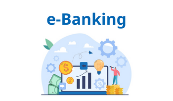

Internetová banka je banka, ktorá poskytuje služby retailového bankovníctva bez vlastnej siete pobočiek. Takáto banka sa niekedy nazýva aj virtuálna banka a forma bankovníctva sa označuje ako internetové bankovníctvo, elektronické bankovníctvo, direct banking alebo priame bankovníctvo. Internetová banka nemá zvyčajne žiadne „kamenné“ pobočky. Vďaka malému počtu zamestnancov a nízkym prevádzkovým nákladom môže svojim klientom ponúknuť rôzne benefity a vyššie úročenie finančných prostriedkov na sporivých účtoch. Klienti majú prístup ku svojim účtom výlučne prostredníctvom internetu, niekde aj pomocou mobilného telefónu, bankomatu alebo telefonického operátora. Mnohé internetové banky ponúkajú svojim klientom bezplatne debetnú i kreditnú kartu. Prvá internetová banka na Slovensku pod názvom Eliot vznikla 5.6.2000 ako dcérska spoločnosť Tatra banky, a.s. Banka ukončila svoju činnosť 1. 9. 2005.
